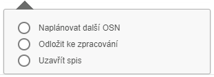
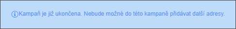
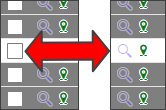
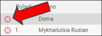

Propadlé kampaně
Práce s kampaní je závislá na práci s jednotlivými spisy. Jakmile inspektor navštíví dlužníka na příslušné adrese, měl by z toho udělat zápis.
Každým zápisem by se jednotlivé adresy měly z již propadlé kampaně odstranit. Jestliže se v seznamu kampaní nachází "stará" propadlá kampaň, pak to znamená, že obsahuje spisy dlužníka, které nemá uživatel vyřešeny.
Výsledkem zápisu
jsou kromě dohody i nedohody, na které systém reaguje následovně:

Tento proces rozhodne, co se s daným spisem stane:
Práce s propadlou kampaní
Jakmile uživatel vybere kampaň, která má datum starší, než je dnešní datum, pak se stane několik věcí:


